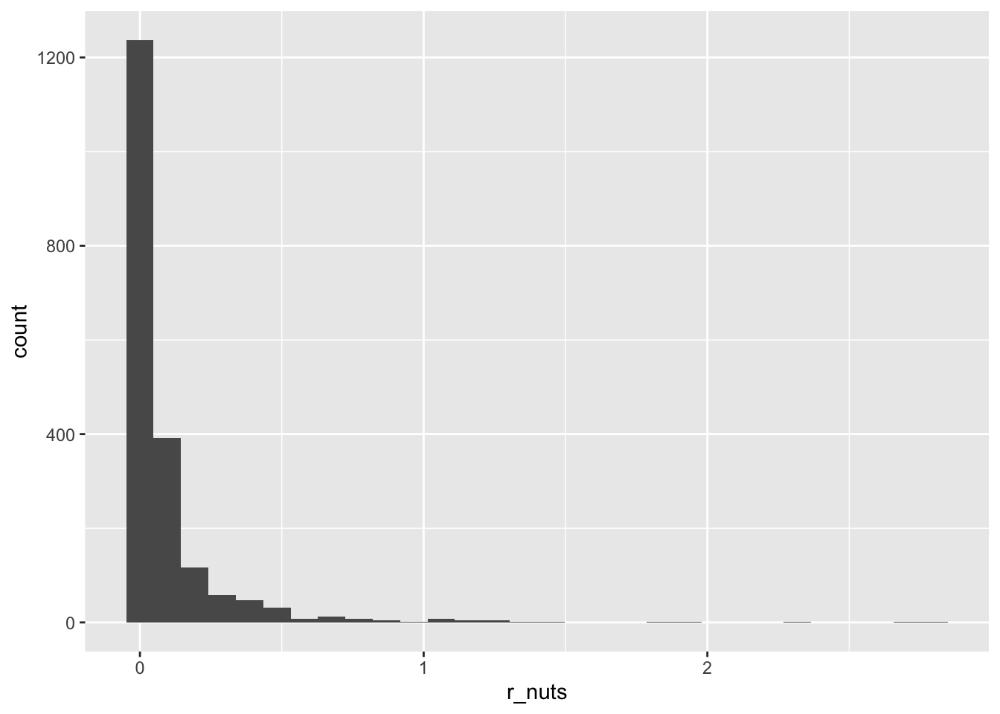

New names:
Rows: 1454 Columns: 19
── Column specification
──────────────────────────────────────────────────────── Delimiter: "," dbl
(18): id, Lat_Dec, Lon_Dec, NO2uM, NO3uM, NH3uM, R_TEMP, R_Depth, R_Sal,... lgl
(1): ...13
ℹ Use `spec()` to retrieve the full column specification for this data. ℹ
Specify the column types or set `show_col_types = FALSE` to quiet this message.
• `` -> `...13`
Rows: 485 Columns: 17
── Column specification ────────────────────────────────────────────────────────
Delimiter: ","
dbl (17): id, Lat_Dec, Lon_Dec, NO2uM, NO3uM, NH3uM, R_TEMP, R_Depth, R_Sal,...
ℹ Use `spec()` to retrieve the full column specification for this data.
ℹ Specify the column types or set `show_col_types = FALSE` to quiet this message.
# adjusting training data per column naming differencestrain_data <- train_raw |>select(-x13) |># all NULLrename(ta1 = ta1_x) # to match the test_raw naming
Data Exploration
# adding all the data together to plot data distributions for variables to check for variance / outliers to inform which ML algorithm to usefull_data <- train_data |>select(-dic) |>rbind(test_raw)# histograms to explore data distributions and look at variance/outliersggplot(data = full_data, aes(x = no2u_m)) +geom_histogram()
`stat_bin()` using `bins = 30`. Pick better value with `binwidth`.
`stat_bin()` using `bins = 30`. Pick better value with `binwidth`.

XGBoost Model
Recipe
# using the xgboost model since this is a powerful ML algorithm that can handle outliers. Code is adapted from: https://bradleyboehmke.github.io/HOML/gbm.html# recipexgb_prep <-recipe(dic ~ ., data = train_data) %>%prep(training = train_data, retain =TRUE) %>%juice()# separating data used for predictions from the predicted valuesX <-as.matrix(xgb_prep[setdiff(names(xgb_prep), "dic")])Y <- xgb_prep$dic
Hyperparameter Tuning and Model Fit Assessment
# set seed for reproducibility set.seed(123)# creating a hyperparameter grid for all xgboost hyperparametershyper_grid <-expand.grid(eta =0.01,max_depth =3, min_child_weight =3,subsample =0.5, colsample_bytree =0.5,gamma =c(0, 1, 10, 100, 1000),lambda =c(0, 1e-2, 0.1, 1, 100, 1000, 10000),alpha =c(0, 1e-2, 0.1, 1, 100, 1000, 10000),rmse =0, # a place to dump RMSE resultstrees =0# a place to dump required number of trees)# loop to search through the grid and apply hyperparameters to all 10 cv foldsfor(i inseq_len(nrow(hyper_grid))) {set.seed(123) m <-xgb.cv(data = X,label = Y,nrounds =4000,objective ="reg:squarederror",early_stopping_rounds =50, nfold =10,verbose =0,params =list( eta = hyper_grid$eta[i], max_depth = hyper_grid$max_depth[i],min_child_weight = hyper_grid$min_child_weight[i],subsample = hyper_grid$subsample[i],colsample_bytree = hyper_grid$colsample_bytree[i],gamma = hyper_grid$gamma[i], lambda = hyper_grid$lambda[i], alpha = hyper_grid$alpha[i] ) ) hyper_grid$rmse[i] <-min(m$evaluation_log$test_rmse_mean) hyper_grid$trees[i] <- m$best_iteration}# store results where rmse is greater than 0rmse_hp_results <- hyper_grid %>%filter(rmse >0) %>%arrange(rmse)# store the best hyperparametersbest_eta <- rmse_hp_results$eta[1]best_md <- rmse_hp_results$max_depth[1]best_cw <- rmse_hp_results$min_child_weight[1]best_ss <- rmse_hp_results$subsample[1]best_csbt <- rmse_hp_results$colsample_bytree[1]best_g <- rmse_hp_results$gamma[1]best_l <- rmse_hp_results$lambda[1]best_a <- rmse_hp_results$alpha[1]# beep when process is donebeep()
Training the Training Data Based on Optimal Hyperparameters
# optimal parameter listparams <-list(eta = best_eta,max_depth = best_md,min_child_weight = best_cw,subsample = best_ss,colsample_bytree = best_csbt,gamma = best_g,lambda = best_l,alpha = best_a)# train the model on the training data given these optimal parametersxgb.fit.final <-xgboost(params = params,data = X,label = Y,nrounds =3944,objective ="reg:squarederror",verbose =0)
Predicting the Test Data Set DIC
# predict the test data setX_test <-as.matrix(test_raw)y_pred <-predict(xgb.fit.final, newdata = X_test)test_data_with_pred <-cbind(test_raw, DIC = y_pred) |>select(id, DIC) # these are the only columns needed for kaggle competition
Writing the Final File to a CSV
# prompt the user to choose their own file name to write to a csvfile_name <-file.choose(new =TRUE)# write test data predictions to a filewrite.csv(test_data_with_pred, file = file_name, row.names =FALSE)